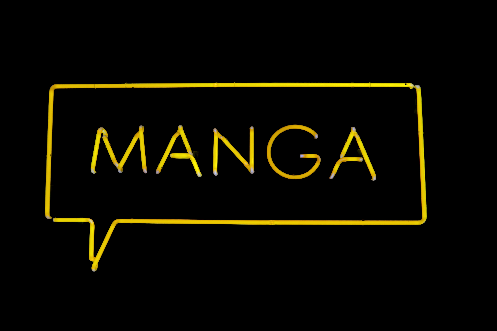

대표적인 블랙 코미디 애니메이션을 이야기할 때 심슨 가족이 빠지지 않고 언급될 만큼 심슨 가족의 영향력은 상당하다. 90년대 이후의 미국 애니메이션의 정체성을 만들었다 해도 과언이 아닐 정도.

기존 미국 시트콤의 주요 주제인 완벽한 가정을 풍자하고 비트는 것으로 시작해서 점점 다양한 영역으로 그 소재를 넓혀 갔다. 다루는 주제는 주로 정치, 심각한 애국주의, 민족주의에 추가로 고전문학이나 현대의 영화, 소설 등을 패러디하기도 하며 역사적 사건에서 따온 에피소드를 제작하기도 한다.[7] 대충 사우스 파크의 순한맛 버전이라고 생각하면 편하다.